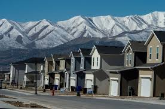
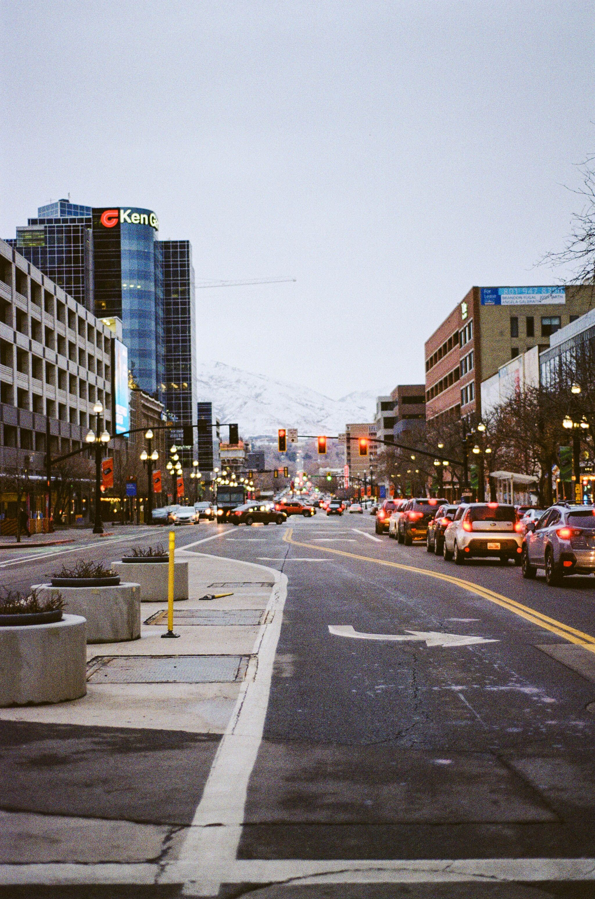

Average Home Prices
Home prices vary across Utah County depending on the city, neighborhood, and current market conditions.

Utah offers a variety of housing options, from new construction to established neighborhoods. Learn about the housing market, average home prices, and some of the best places to live in Utah County.
Home prices vary across Utah County depending on the city, neighborhood, and current market conditions.
Utah County continues to grow with new developments and neighborhoods offering homes for many different budgets.

Popular communities include Lehi, Saratoga Springs, American Fork, Orem, and Provo because of their schools, jobs, and amenities.
Buyers can use this page as a starting point for comparing local prices, inventory, new construction, and neighborhood options. The goal is to make Utah County feel easier to understand before someone starts looking seriously.
Utah County continues to attract new residents because of its growing job market, highly rated schools, outdoor recreation, and family-friendly communities. Cities like Lehi, American Fork, Orem, Provo, and Saratoga Springs offer a wide range of housing options, making it easier to find a home that fits different lifestyles and budgets.